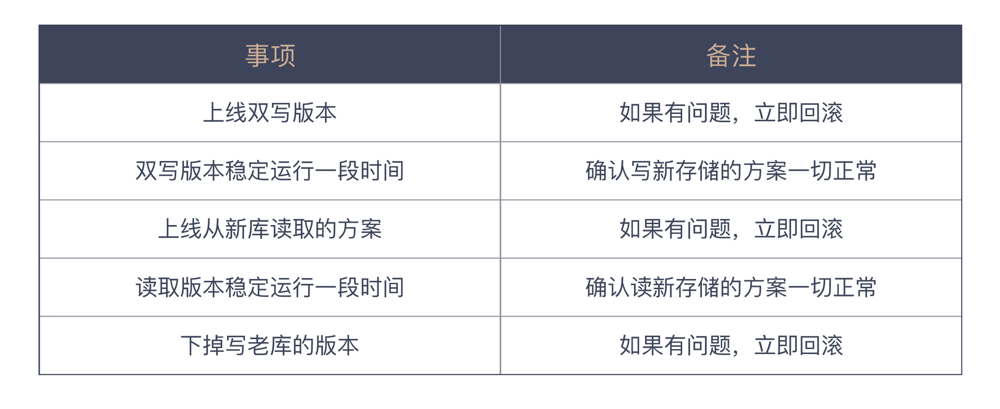

- 00 开篇词 程序员解决的问题，大多不是程序问题.md.html
- 01 10x程序员是如何思考的？.md.html
- 02 以终为始：如何让你的努力不白费？.md.html
- 03 DoD的价值：你完成了工作，为什么他们还不满意？.md.html
- 04 接到需求任务，你要先做哪件事？.md.html
- 05 持续集成：集成本身就是写代码的一个环节.md.html
- 06 精益创业：产品经理不靠谱，你该怎么办？.md.html
- 07 解决了很多技术问题，为什么你依然在“坑”里？.md.html
- 08 为什么说做事之前要先进行推演？.md.html
- 09 你的工作可以用数字衡量吗？.md.html
- 10 迭代0_ 启动开发之前，你应该准备什么？.md.html
- 11 向埃隆·马斯克学习任务分解.md.html
- 12 测试也是程序员的事吗？.md.html
- 13 先写测试，就是测试驱动开发吗？.md.html
- 14 大师级程序员的工作秘笈.md.html
- 15 一起练习：手把手带你分解任务.md.html
- 16 为什么你的测试不够好？.md.html
- 17 程序员也可以“砍”需求吗？.md.html
- 18 需求管理：太多人给你安排任务，怎么办？.md.html
- 19 如何用最小的代价做产品？.md.html
- 20 为什么世界和你的理解不一样？.md.html
- 21 你的代码为谁而写？.md.html
- 22 轻量级沟通：你总是在开会吗？.md.html
- 23 可视化：一种更为直观的沟通方式.md.html
- 24 快速反馈：为什么你们公司总是做不好持续集成？.md.html
- 25 开发中的问题一再出现，应该怎么办？.md.html
- 26 作为程序员，你也应该聆听用户声音.md.html
- 27 尽早暴露问题： 为什么被指责的总是你？.md.html
- 28 结构化：写文档也是一种学习方式.md.html
- 29 “懒惰”应该是所有程序员的骄傲.md.html
- 30 一个好的项目自动化应该是什么样子的？.md.html
- 31 程序员怎么学习运维知识？.md.html
- 32 持续交付：有持续集成就够了吗？.md.html
- 33 如何做好验收测试？.md.html
- 34 你的代码是怎么变混乱的？.md.html
- 35 总是在说MVC分层架构，但你真的理解分层吗？.md.html
- 36 为什么总有人觉得5万块钱可以做一个淘宝？.md.html
- 37 先做好DDD再谈微服务吧，那只是一种部署形式.md.html
- 38 新入职一家公司，怎么快速进入工作状态？.md.html
- 39 面对遗留系统，你应该这样做.md.html
- 40 我们应该如何保持竞争力？.md.html
- 划重点 “综合运用”主题内容的全盘回顾.md.html
- 划重点 “自动化”主题的重点内容回顾汇总.md.html
- 划重点 一次关于“沟通反馈”主题内容的复盘.md.html
- 划重点 关于“以终为始”，你要记住的9句话.md.html
- 划重点 关于“任务分解”，你要重点掌握哪些事？.md.html
- 加餐 你真的了解重构吗？.md.html
- 总复习 重新审视“最佳实践”.md.html
- 总复习 重新来“看书”.md.html
- 答疑解惑 如何分解一个你不了解的技术任务？.md.html
- 答疑解惑 如何在实际工作中推行新观念？.md.html
- 答疑解惑 如何管理你的上级？.md.html
- 答疑解惑 持续集成、持续交付，然后呢？.md.html
- 答疑解惑 持续集成，一条贯穿诸多实践的主线.md.html
- 结束语 少做事，才能更有效地工作.md.html
- 捐赠
08 为什么说做事之前要先进行推演？
你好，我是郑晔。
经过前面的学习，想必你已经对“以终为始”这个原则有了自己的理解。你知道接到一个任务后，要做的不是立即埋头苦干，而是要学会思考，找出真正的目标。那目标明确之后，我们是不是就可以马上开始执行了呢？
先不着急给出你的答案，今天的内容从一个技术任务开始。
一个技术任务
你现在在一家发展还不错的公司工作。随着业务的不断发展，原来采用的关系型数据库越发无法满足快速的变化。于是，项目负责人派你去做个技术选型，把一部分业务迁移到更合适的存储方式上。
经过认真的调研和思考，你给负责人提出了自己的建议，“我们选择 MongoDB。”出于对你的信任，负责人无条件地同意了你的建议，你获得了很大的成就感。
在你的喜悦尚未消退时，负责人进一步对你委以重任，让你来出个替代计划。替代计划？你有些不相信自己的耳朵，嘴里嘟囔着：“把现在存到数据库的内容写到 MongoDB 不就成了，我就一个表一个表地替换。难道我还要把哪天替换哪个表列出来吗？”
刚刚还对你欣赏有加的负责人，脸色一下子沉了下来。“只有表改写吗？”他问你。你一脸懵地看着他，心里想，“不然呢？”
“上线计划呢？”负责人问。
“我还一行代码都没写呢？”你很无辜地看着负责人。
“我知道你没写代码，我们就假设代码已经写好了，看看上线是怎样一个过程。”
“不是发新版本就好了吗？”你还是不知道负责人到底想说什么。
“你能确定新版代码一定是对的吗？”
虽然你已经叱咤编程很多年，但作为老江湖，一听这话反而是有些怯的。“不能。”你痛快地承认了。
“一旦出错，我们就回滚到上一个版本不就成了。”常规的处理手段你还是有的。
“但数据已经写到了不同的存储里面，查询会受到影响，对不对？”负责人一针见血。
“如果这个阶段采用两个数据存储双写的方案，新代码即便出问题，旧存储的代码是正常，我们还有机会回滚。”你一下子就给出了一个解决方案，咱最不怕出问题了。
“对。”负责人认同了你的做法，一副没看错人的神情。“让你出上线方案，就是为了多想想细节。”
你终于明白了负责人的良苦用心，也就不再大意。很快，你就给出了一份更详尽的上线方案。

你把这个方案拿给负责人看，信心满满，觉得自己够小心，一步一步做，没有任何问题。但负责人看了看你的上线计划，眉头逐渐锁了起来，你知道负责人还是不满意，但不知道还差在哪里？
“原有的数据怎么办？”负责人又问了一个问题。你一下子意识到，确实是问题。“没有原有数据，一旦查询涉及到原有数据，查询的结果一定是错的。所以，还应该有一个原有数据的迁移任务。”你尴尬地笑了笑。
负责人微笑着看着你。“好吧，从我的角度看差不多了，你可以再仔细想想。然后，排一个开发任务出来吧！”
你当然不会辜负负责人的信任，很快排出了开发任务。

看着排出的任务，你忽然困惑了。最开始只是想写个读写新库的组件，怎么就多出这么些任务。此外，你还很纳闷为什么负责人总是能找到这么多问题。
一次个人回顾
你想起之前的工作里有过类似的场景，那个负责人也是让你独立安排任务。通常，你最初得到的也是一个简单的答案，从当时的心境上看，你是很有成就感的。
只是后来的故事就不那么美妙了，上线时常常出现各种问题，你和其他同事们手忙脚乱地处理各种异常。当时顶着巨大压力解决问题的场景，你依然记忆犹新。解决完问题离开公司时，天空已经泛起鱼肚白。
而似乎自从加入了现在的公司，这种手忙脚乱的场景少了很多。你开始仔细回想现在这个负责人在工作中的种种。从给大家机会的角度来看，这个负责人确实不错，他总会让一个人独立承担一项任务。只不过，他会要求大家先将任务分解的结果给他看。
拿到组里任何一个人的开发列表之后，他都会问一大堆问题，而且大多数情况下，他都会问到让人哑口无言。说句心里话，每次被他追问心里是挺不舒服的，就像今天这样。
本来在你看来挺简单的一件事，经过他的一系列追问，变成了一个长长的工作列表，要做的事一下子就变多了。毕竟谁不愿意少做点活呢！
不过，你不得不承认的一点是，加入这个公司后，做事更从容了。你知道无论做的事是什么，那些基本的部分是一样的，差别体现在事前忙，还是事后忙，而现在这家公司属于事前忙。于是，你开始把前一家公司上线时所忙碌的内容，和现在负责人每次问的问题放在一起做对比。
这样一梳理，你才发现，原来负责人问的问题，其实都是与上线相关的问题。包括这次的问题也是，上线出问题怎么办，线上数据怎么处理等等。
你突然意识到一个关键问题，其实负责人每次问的问题都是类似的，无论是你还是其他人，他都会关心上线过程是什么样，给出一个上线计划。即便我们还一行代码都没有，他依然会让我们假设如果一切就绪，应该怎样一步一步地做。
你终于明白了，之前的项目之所以手忙脚乱，因为那时候只想了功能实现，却从来没考虑过上线，而且问题基本上都是出在上线过程中的。你想到了上次参加一个社区活动，其中的一个大牛提到了一个说法：“最后一公里”。
想到这，你赶紧上网搜了一下“最后一公里”，这个说法指的是完成一件事，在最后也是最关键的步骤。你才意识到，“最后一公里”这个说法已经被应用在很多领域了，负责人就是站在“最后一公里”的角度来看要发生的事情。
嗯，你学会了一招，以后你也可以站在“最后一公里”去发现问题了，加上你已经具备的推演能力，给出一个更令人满意的任务列表似乎更容易一些。
把这个问题想清楚了，你重新整理了自己的思路，列出了一个自己的问题解决计划。
- 先从结果的角度入手，看看最终上线要考虑哪些因素。
- 推演出一个可以一步一步执行的上线方案，用前面考虑到的因素作为衡量指标。
- 根据推演出来的上线方案，总结要做的任务。
不过，更令你兴奋的是，你拥有了一个看问题的新角度，让自己可以再上一个台阶，向着资深软件工程师的级别又迈进了一步。
通往结果之路
好了，这个小故事告一段落。作为我们专栏的用户，你可能已经知道了这个故事要表达的内容依旧是“以终为始”。关于“以终为始”，我们前面讲的内容一直是看到结果，结果是重要的。然而，通向结果的路径才是更重要的。
这个世界不乏有理想的人，大多数人都能看到一个宏大的未来，但这个世界上，真正取得与这些理想相配成绩的人却少之又少，大部分人都是泯然众生的。
宏大理想是一个目标，而走向目标是需要一步一个脚印地向前走的。唐僧的目标是求取真经，但他依然用了十几年时间才来到大雷音寺。唐僧西天取经有一个极大的优势，他达成目标的路径是清晰的，从长安出发，向着西天一路前行就好。
对比我们的工作，多数情况下，即便目标清晰，路径却是模糊的。所以，不同的人有不同的处理方式。有些人是走到哪算哪，然后再看；有些人则是先推演一下路径，看看能走到什么程度。
在我们做软件的过程中，这两种路径所带来的差异，已经在前面的小故事里体现出来了。一种是前期其乐融融，后期手忙脚乱；一种是前面思前想后，后面四平八稳。我个人是推崇后一种做法的。
或许你已经发现了，这就是我们在“以终为始”主题的开篇中，提到的第一次创造或者智力上的创造。如果不记得了，不妨回顾一下《02 | 以终为始：如何让你的努力不白费？》。
实际上，早就有人在熟练运用这种思想了。在军事上，人们将其称为沙盘推演，或沙盘模拟。军队通过沙盘模拟军事双方的对战过程，发现战略战术上存在的问题。这一思想也被商界借鉴过来，用来培训各级管理者。
这个思想并不难理解，我们可以很容易地将它运用在工作中的很多方面。比如：
- 在做一个产品之前，先来推演一下这个产品如何推广，通过什么途径推广给什么样的人；
- 在做技术改进之前，先来考虑一下上线是怎样一个过程，为可能出现的问题准备预案；
- 在设计一个产品特性之前，先来考虑数据由谁提供，完整的流程是什么样的。
最后这个例子也是软件开发中常遇到的，为数不少的产品经理在设计产品时，只考虑到用户界面是怎样交互的，全然不理会数据从何而来，造成的结果是：累死累活做出来的东西，完全跑不通，因为没有数据源。
很多时候，我们欠缺的只是在开始动手之前做一遍推演，所以，我们常常要靠自己的小聪明忙不迭地应对可能发生的一切。
希望通过今天的分享，能让你打破手忙脚乱的工作循环，让自己的工作变得更加从容。
总结时刻
即便已经确定了自己的工作目标，我们依然要在具体动手之前，把实施步骤推演一番，完成一次头脑中的创造，也就是第一次创造或智力上的创造。这种思想在军事上称之为沙盘推演，在很多领域都有广泛地应用。
在软件开发过程中，我们就假设软件已经就绪，看就绪之后，要做哪些事情，比如，如何上线、如何推广等等，这样的推演过程会帮我们发现前期准备的不足之处，进一步丰富我们的工作计划。为了不让我们总在“最后一公里”摔跟头，前期的推演是不可或缺的，也是想让团队进入有条不紊状态的前提。
如果今天的内容你只记住一件事，那请记住：在动手做一件事之前，先推演一番。
最后，我想请你思考一下，如果把你在做的事情推演一番，你会发现哪些可以改进的地方呢？欢迎在留言区写下你的想法。
感谢阅读，如果你觉得这篇文章对你有帮助的话，也欢迎把它分享给你的朋友。
© 2019 - 2023 Liangliang Lee. Powered by gin and hexo-theme-book.